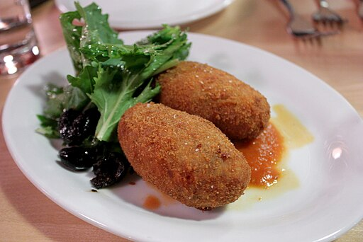
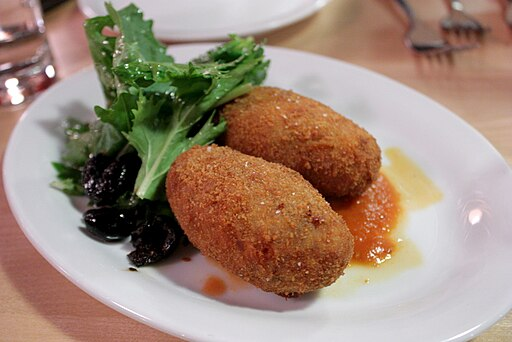

This website is about Rome, focusing on its most well-known neighbourhoods and traditional food.
(Hover over the images below to see them better)


 

Instead of describing the city in a general way, it offers a different and unique approach by exploring Rome through its local areas and culinary traditions.